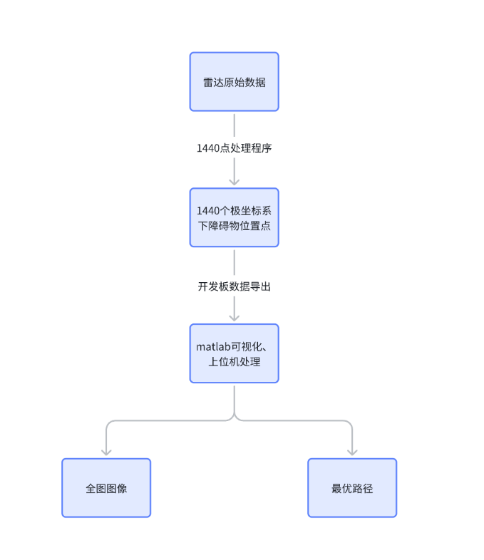
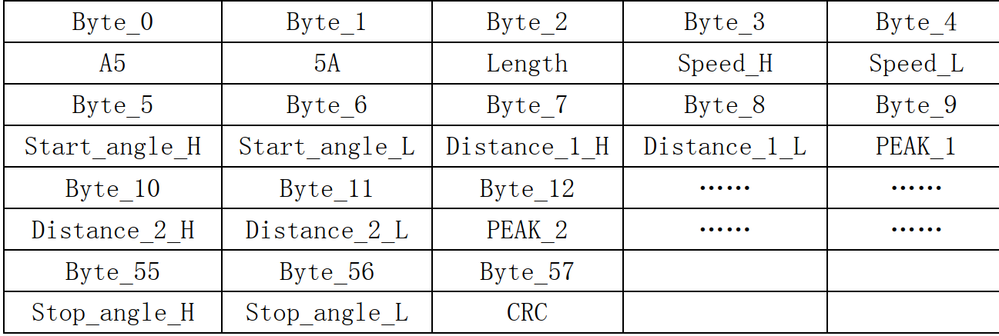
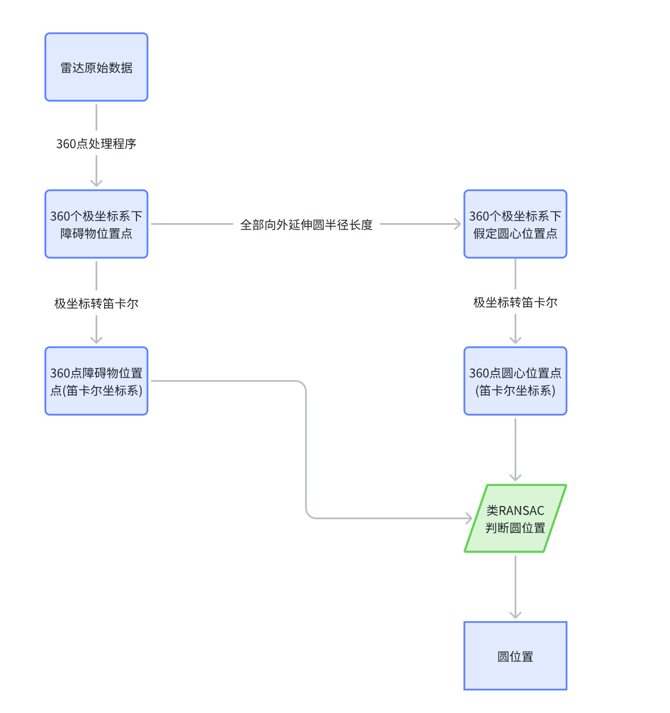
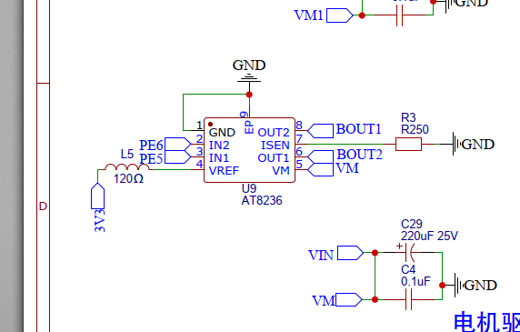
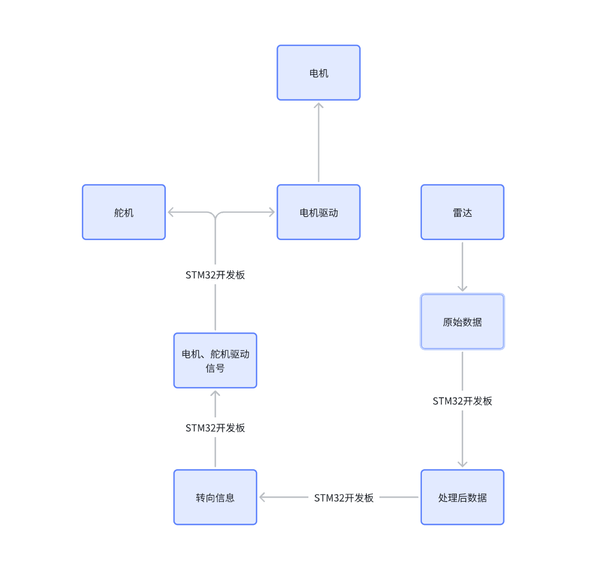

| 项目类型 | 工程原理课程项目 |
| 项目角色 | 核心开发 |
| 核心工具 | STM32 / 激光雷达 / MATLAB / Altium Designer |
| 关键技术 | 雷达数据解析、RANSAC圆检测、路径规划 |
本项目基于STM32与激光雷达，实现室内环境下的障碍物检测、地图构建与路径规划。系统由STM32采集雷达数据，MATLAB端进行可视化与路径优化，最终规划最优路径引导小车自主导航。

系统采用360°激光雷达，每圈输出1440个极坐标点（角度+距离）。雷达通过串口向STM32发送数据包，帧格式如下：

STM32通过UART接收并解析帧头（0xA5 0x5A）、起止角度、距离数组与CRC校验，将数据传输至上位机。
为从稀疏点云中识别圆柱形障碍物，采用类RANSAC（Random Sample Consensus）方法：

驱动模块采用AT8236双H桥芯片，通过STM32 PWM控制电机转速，支持正反转与制动。舵机用于前轮转向控制。


STM32将处理后的雷达数据通过串口导出至MATLAB，上位机负责：